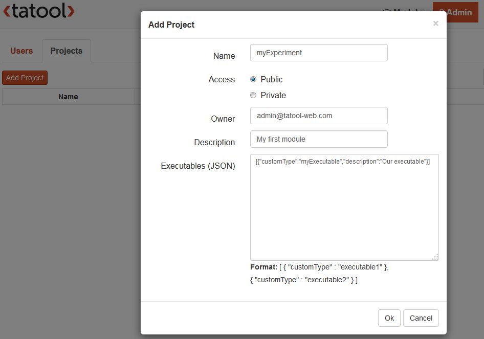

Every Service is created only once per Session execution. Therefore, variable values will persist from one trial execution to the next.

In this section you'll learn how to create your first Executable, to add it to your local Tatool environment project, and to embed it in a Module. Make sure to read the Tatool Glossary first as this will help you to understand this and the following sections.
tatool.factory('myExecutable', [ 'tatoolExecutable',
function (tatoolExecutable) {
var MyExecutable = tatoolExecutable.createExecutable();
MyExecutable.prototype.init = function() {
// our Executable initialization code goes here
};
// our custom methods go here
MyExecutable.prototype.stopExecution = function() {
tatoolExecutable.stop();
};
return MyExecutable;
}]);
The tatool.factory() method in line 1 will instantiate our Service for us. Because we're going to have multiple Services, we need to assign a unique name to our Service. The first argument of the tatool.factory() method defines just that name. Use lowerCamelCase to name your Executable Service and make sure that you use the exact same name as in the prefix in your filename. In our case the filename is 'myExecutable.service.js', so the name of our Executable Service has to be 'myExecutable'. This is important because at runtime, Tatool will look for the file according to the name you've given in your Service, and will fail to locate the file if they don't match.
The second argument of the tatool.factory() method is an array [] containing the dependencies and, as the last entry on line 2, the main function. As you can see, we've already added the dependency 'tatoolExecutable' which is a service provided by Tatool. Every dependency has to occur twice, once as a String entry in the array, and once as an argument in the main function. In case you have multiple dependencies, take care that also the order of the dependencies matches.
On line 4 we create an instance of our Executable with the help of the tatoolExecutable Service, and on line 15 we return that instance. Remember that every Service is created only once per Session and, therefore, things we create in here will persist across the execution of trials. Hence, wherever we will use this Executable Service, it will always return this one instance that we've just created.
Generally, we don't want our users to wait 5 seconds before every trial execution until the stimulus has loaded. Therefore, to avoid any long running processes during the actual execution of our Executable, Tatool requires the mandatory prototype method 'init' (here on line 6). This method is called once at the beginning of every Session and allows for preparing (i.e., initialising) your Executable for execution. This can comprise the reading of stimuli files, preloading of stimuli material such as images or videos, and creation of any other objects that need to be created only once per Session.
At the end of each trial, we'll want to end the execution of our Executable to be ready for presenting the next trial. To provide a method for our Controller to be able to do so, we add our first custom prototype method on line 11 and name it 'stopExecution'. Within this method, we once again make use of a method that is provided by the tatoolExecutable Service, its stop() method. As the name says, this method stops the current execution of this Executable. We'll be using our custom method 'stopExecution' later in our Controller.
That's it for the basic structure of our Executable Service. You can use this example code as a starting point for programming your future Executables, as it contains the minimum code required for an Executable to run.
tatool.controller('myExecutableCtrl', [ '$scope', 'service',
function ($scope, service) {
$scope.start = function() {
// our code goes here
service.stopExecution();
}
// our custom methods go here
}]);
As you can see, the first two lines look extremely similar to our Executable Service. This time, we're calling the method tatool.controller() in line 1 which will instantiate our controller. As for the Service, we have to define the dependencies, but here we add two different ones. The Controller always needs the two dependencies $scope and service in order for him to fulfill its mediating role in terms of talking to our Template (using the '$scope') and our Service (using the 'service').
The body of our Controller contains only one mandatory method on line 4. It's called 'start' and belongs to the $scope service. This method is the starting point of your Executable and will be called once the Service, Controller and Template have loaded successfully. Inside this method, you'll later define what happens during the execution (e.g., displaying the stimulus and then wait for a response). For now, we'll only call the method stopExecution() available from our Service (see above) that will immediately stop the current execution.
<tatool>
<!-- our code goes here -->
</tatool>
Yes, that's the minimum required code for a Template. Once all code contained within the tags has finished loading, the Tatool element (line 1) will call our Controllers' 'start' method.
Now that we have created our first Executable, albeit a pretty boring one, it's time to see whether we can actually run it. In order to run the Executable, we'll first have to put the files into a Project, which in turn can be used by a Module.
1. Open your local Tatool by opening the website (e.g. http://127.0.0.1:3000) in your browser. Login with a user that has the 'Admin' role. Once logged in, click on the 'Admin' link in the top navigation. On the admin page you can select the 'Projects' tab at the top and add a new Project. Let's keep it simple for now and give the Project the name 'myExperiment' of access type 'public', and provide your login email as the owner. Choose any text you like in the description (e.g., 'My first module'). In addition, we'll have to provide more detailed information about our Executable, so we can select it later in the Module Editor. Add the following text in the Executables (JSON) text field:
[{"customType":"myExecutable","description":"Our executable"}]

2. Login to your local Tatool with any user having the 'Developer' role (note that you might have to add such a user first). Once logged in, click on the 'Developer' link in the top navigation. On the developer page create a new Module and add a new Executable to the List Element. Change the Type of the Executable by clicking on the blue edit button. Choose the Project 'myExperiment' we just added before and select the 'myExecutable' Executable in the Type dropdown below. Press 'OK' twice to save the Module.


3. You can now run your Module by pressing the 'Start' button. Tatool will open the Module and finish immediately by returning to the the Module overview screen. This is exactly what we expect, as we didn't add any logic to our Executable yet. As a next step we're going to add some flesh to our Executable.
As a next step, we're going to add some flesh to our Executable by presenting actual stimuli and recording the users' responses to it. To proceed, please go to Advanced Executable.